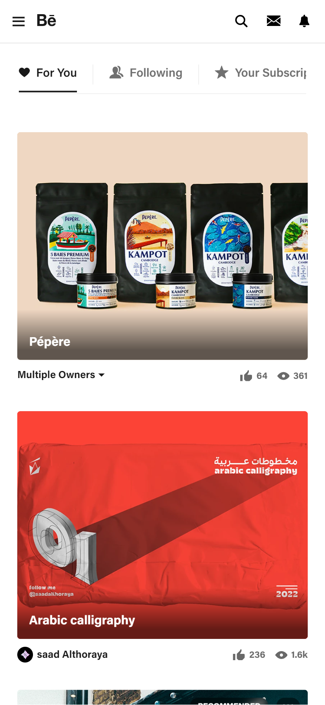

Alignment:
BehanceBehance implements a beautiful grid pattern. It makes it easy to sort through content, and when you expand the window size, the grid pattern adapts and adds more rows and columns accordingly.
Contrast:
DiscordDiscord's landing page is a great example of correct color contrast. The dark blue contrasts extremely well against the white space and white text. The black and white calls to action buttons contrast against each other well, and the white text on the black button is another great contrast. Three great examples all in one viewport!
White Space and Clean Design:
AdobeAdobe's mobile site is extremely clutter free, making it easy to identify points of interest. The spacing makes everything stand out and look great, all while creating an outstanding user experience.